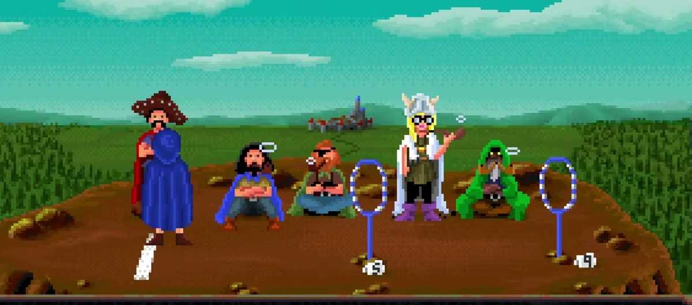
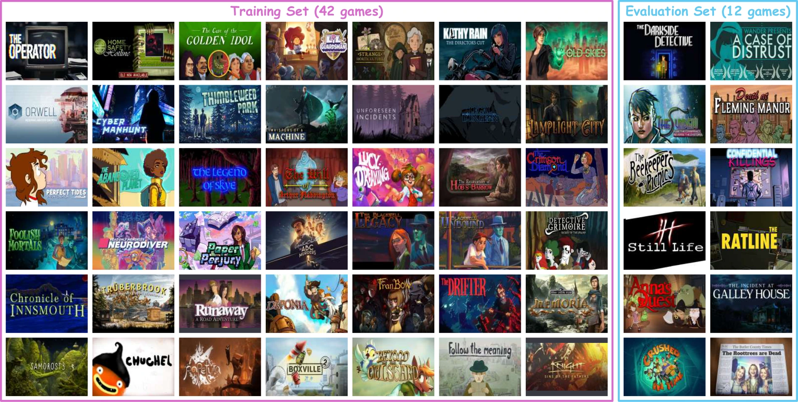

Review earlier evidence
What would you do next?
Screenshots and reference moves come from recorded play. Choices are written for this demo, and cases skip intervening actions.
A 2D narrative game benchmark
From clues to actions
A clue can sit unused for several scenes. Game408 tests whether a model can recall it, connect it to what it sees, and decide what to do next.
Try a recorded case
Choose a recorded scene. Look around, revisit earlier evidence, then pick the next move.
Screenshots and reference moves come from recorded play. Choices are written for this demo, and cases skip intervening actions.
Opens with the first release of the evaluation tools, data, and submission instructions.
Game408 starts agents at story checkpoints in mostly 2D narrative and puzzle games. They can inspect screens, revisit clues, and take one discrete action at a time.
Does the agent accomplish the stage objective?
Do the operation, target, and parameters carry out the intended move?
Does the decision draw on observations, earlier evidence, and feedback?

The proposed agent learns from human annotations, trains execution under teacher-provided intent, and jointly distills reasoning and actions on autonomous trajectories.

Game408: Deep Reasoning from Clues to Actions in Long-Horizon Narrative Game Worlds